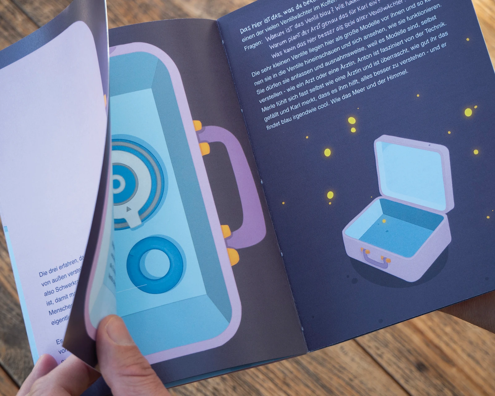
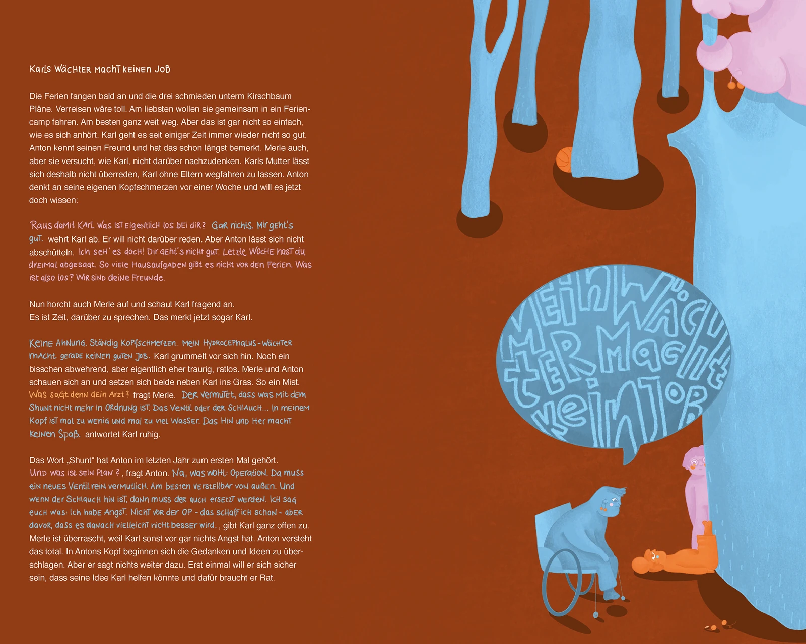
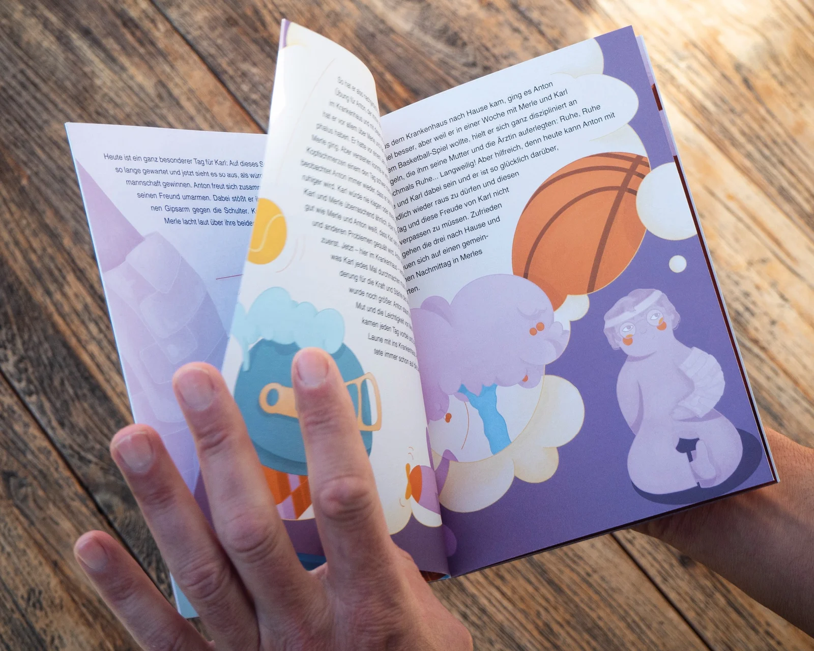

Wenn der Kopf ein bisschen mehr Platz braucht.
„Karls Wächter“ ist eine Geschichte der Firma Miethke. Ihr Produktionssitz liegt in Potsdam, wo
einzigartige Schwerkraft-ventile zur Behandlung der Diagnose des Hydrocephalus hergestellt werden.
Sie handelt von drei Freund*innen, zwei davon haben den Hydrocephalus, die in ihren Ferien einen
Ausflug zur
Firma Miethke machen, um ihnen so die Angst vor einer OP, welche einem der Kinder kurz bevor steht, zu
nehmen. Die drei entdecken verschiedene Modelle der Shunt- und Ventilsysteme, können Fragen stellen und
erleben im Anschluss Abenteuer beim Bootfahren, in Freizeitparks und vielen weiteren spannenden
Aktivitäten.


In der Gestaltung von „Kars Wächter“ habe ich bewusst auf Klischees verzichtet. Statt
auf
klassische
Rollenbilder oder Haut- und Haarfarben zu fokussieren, arbeitet mein visuelles Konzept mit einer
inklusiven Farbwelt aus Rosa, Hellblau, Orange und leuchtendem Gelb. So trägt das Mädchen kein rosa
Kleid, während der Protagonist Karl als blaue Figur optisch eine Brücke zum berühmten „blauen Ventil“
der Firma Miethke schlägt.
In der typografischen Gestaltung trifft Präzision auf Nahbarkeit:
Die Hausschrift Helvetica wurde
durch
handschriftliche Elemente ergänzt und farblich an die jeweiligen Charaktere angepasst.
Im
Mittelpunkt
steht die spielerische Entdeckungstour. Durch interaktive Klappseiten erkunden Kinder die Welt der
Medizintechnik und suchen nach Shunts, Magneten und Flugzeugen während die Erziehungsberechtigten
zeitgleich Antworten auf brennende Fragen zur Diagnose Hydrocephalus erhalten. So verbindet das Buch
technisches Fachwissen mit einer kindgerechten Lebenswelt, in der die Diagnose und ein aktiver
Alltag
Hand in Hand gehen.
